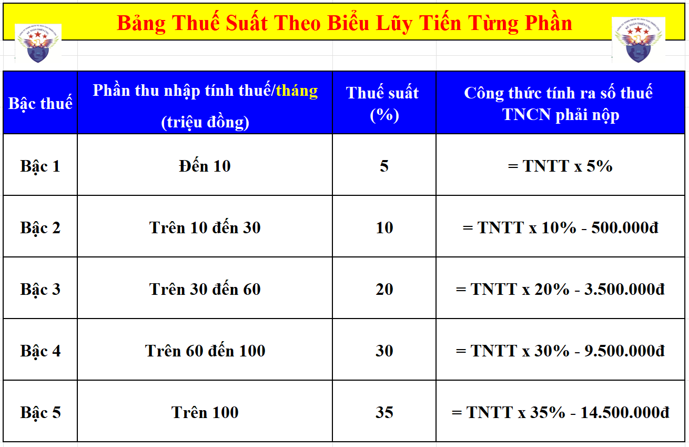

Hướng dẫn cách tính thuế TNCN theo biểu lũy tiến từng phần dành cho lao động là cá nhân cư trú có ký hợp đồng lao động từ 3 tháng trở lên
Muốn được tính thuế thu nhập cá nhân theo biểu lũy tiến từng phần thì người lao động đó phải đáp ứng được các điều kiện sau:
+ Là cá nhân cư trú
(Cá nhân không cứ trú thì sẽ phải tính thuế theo thuế suất toàn phần là 20%)
+ Có ký hợp đồng lao động có thời hạn từ 3 tháng trở lên hoặc ký hợp đồng lao động vô thời hạn
(Người lao động mà ký hợp đồng lao động dưới 3 tháng hoặc ký các loại hợp đồng không phải là hợp đồng lao động như hợp đồng thử việc, hợp đồng khoán việc, hợp đồng dịch vụ, hợp đồng môi giới, thực tập, đào tạo... thì sẽ phải tính thuế theo tỷ lệ 10%)
Công ty đào tạo Kế Toán Diệu Tâm mời các bạn tham khảo thêm:
Việc tính thuế TNCN theo biểu lũy tiến từng phần bao gồm cả những đối tượng sau:
+ Đối với cá nhân cư trú ký hợp đồng lao động từ 3 tháng trở lên nhưng nghỉ làm trước khi kết thúc hợp đồng lao động thì doanh nghiệp vẫn thực hiện khấu trừ thuế theo Biểu thuế lũy tiến từng phần
+ Kể cả trường hợp cá nhân ký hợp đồng từ ba 3 tháng trở lên tại nhiều nơi thì cũng thực hiện tính thuế TNCN theo biểu lũy tiến từng phần
+ Kể cả trường hợp cá nhân ký hợp đồng từ ba 3 tháng trở lên tại nhiều nơi thì cũng thực hiện tính thuế TNCN theo biểu lũy tiến từng phần
+ Đối với lao động làm việc bán thời gian: Nếu ký hợp đồng lao động từ 3 tháng trở lên thì cũng thực hiện tính thuế TNCN theo biểu lũy tiến từng phần
Đó là đối tượng được tính thuế TNCN theo biểu lũy tiến từng phần
Tiếp theo, chúng ta đi tìm hiểu về công thức tính thuế TNCN theo biểu lũy tiến từng phần:
Thuế TNCN phải nộp = Thu nhập tính thuế X Thuế suất theo biểu lũy tiến từng phần
Thu nhập tính thuế = Thu nhập chịu thuế - Các khoản giảm trừ
Thu nhập chịu thuế = Tổng thu nhập - Các khoản thu nhập được miễn thuế
Trong đó:
+ Tổng thu nhập: Là toàn bộ tiền lương, tiền công mà người lao động nhận được trong tháng bao gồm cả tiền thưởng lễ tết. Trả lương vào tháng nào thì tính vào tháng đó.
+ Các khoản thu nhập được miễn thuế: xác định tại các khoản phụ cấp như tiền ăn, điện thoại, công tác phí, làm thêm giờ... theo mức quy định
Chi tiết mời các bạn xem tại đây: Các khoản thu nhập được miễn thuế TNCN
+ Các khoản giảm trừ năm 2026, gồm có:
+ Giảm trừ gia cảnh:
+/ Mức giảm trừ bản thân NLĐ: 15.500.000/người/tháng
+/ Mức giảm trừ người phụ thuộc: 6.200.000/người/tháng (Người phụ thuộc là người mà NLĐ phải có trách nhiệm nuôi dưỡng, ví dụ như: con, cha, mẹ, ông bà...)
+ Bảo hiểm bắt buộc
+ Các khoản từ thiện, khuyến học, nhân đạo
Chi tiết mời các bạn xem tại đây: Các khoản được giảm trừ khi tính thuế TNCN
Thuế suất theo biểu lũy tiền từng phần:
Bắt đầu ngày 01/01/2026 trở đi sẽ áp dụng thuế suất theo biểu lũy tiến từng phần được quy định tại khoản 2, điều 9 của Luật Thuế thu nhập cá nhân số 109/2025/QH15 như sau:

Lũy tiến là tăng dần, từng phần (từng bậc) thu nhập tính thuế sẽ có những mức thuế suất tương ứng với mức thu nhập đó, thu nhập càng cao thì mức thuế suất càng lớn.
Sau đây Kế Toán Diệu Tâm sẽ đưa ra 1 ví dụ cụ thể để hướng dẫn các bạn trình tự các bước thực hiện tính thuế TNCN theo biểu lũy tiến từng phần dành cho lao động là cá nhân cư trú có ký hợp đồng lao động từ 3 tháng trở lên:
Bà Trần Ngọc Hà là cá nhân cư trú có ký Hợp đồng lao động vô thời hạn với công ty Kế Toán Diệu Tâm:
Tháng 02 năm 2026, Bà Hương có nhận được các khoản thu nhập như sau:
+ Lương chính: 25.000.000đ
+ Phụ cấp ăn trưa: 1.200.000đ
+ Phụ cấp xăng xe: 300.000đ
+ Phụ cấp điện thoại: 500.000đ
+ Phụ cấp chuyên cần: 1.000.000đ
+ Tiền thưởng Tết Nguyên Đán năm 2026: 15.000.000đ
- Các thông tin khác:
+ Phụ cấp ăn trưa: 1.200.000đ
+ Phụ cấp xăng xe: 300.000đ
+ Phụ cấp điện thoại: 500.000đ
+ Phụ cấp chuyên cần: 1.000.000đ
+ Tiền thưởng Tết Nguyên Đán năm 2026: 15.000.000đ
+ Bà Hương chỉ có thu nhập tại công ty Kế Toán Diệu Tâm, không có thu nhập tại nơi khác
+ Bà Hương có 2 người phụ thuộc đã đăng ký giảm trừ tại công ty Kế Toán Diệu Tâm từ tháng 01 năm 2026.
+ Bà Hương đóng các khoản bảo hiểm bắt buộc trên mức lương 25.000.000đ => Nên tháng 2/2026, Bà Hương bị trích bảo hiểm trừ vào lương với số tiền là: 25.000.000 x 10,5% = 2.625.000đ
+ Bà Hương có 2 người phụ thuộc đã đăng ký giảm trừ tại công ty Kế Toán Diệu Tâm từ tháng 01 năm 2026.
+ Bà Hương đóng các khoản bảo hiểm bắt buộc trên mức lương 25.000.000đ => Nên tháng 2/2026, Bà Hương bị trích bảo hiểm trừ vào lương với số tiền là: 25.000.000 x 10,5% = 2.625.000đ
Khi trả lương tháng 2/2026 cho Bà Hương thì công ty Kế Toán Diệu Tâm sẽ tính thuế thu nhập cá nhân cho phần thu nhập mà bà Hương nhận được vào tháng 2/2026 như sau:
Bước 1: Tính Tổng thu nhập của Bà Hương trong tháng 2 năm 2026:
| Tổng thu nhập | = | Tiền lương | + | Phụ cấp | + | Tiền thưởng |
|
= |
25.000.000 |
+ |
1.200.000 + 300.000 + 500.000 + 1.000.000 |
+ |
15.000.000 | |
| = |
43.000.000đ
|
|||||
Bước 2: Tính tổng các khoản thu nhập được Miễn thuế TNCN (nằm ở các khoản phụ cấp)
Trong 4 khoản tiền phụ cấp mà bà Hương nhận được tại tháng 2/2026 thì:
+ Đối với khoản "Phụ cấp ăn trưa: được nhận 1.200.000đ" thì:
Do hiện nay, quy định về tiền ăn ca sẽ được thực hiện theo thỏa thuận trong hợp đồng lao động, thỏa thuận trong thỏa ước lao động tập thể hoặc theo quy định trong nội quy, quy chế của doanh nghiệp theo quy định của Bộ luật Lao động.
=> Mà khoản thu nhập này, bà Hương đang được nhận theo đúng mức đã thỏa thuận trong hợp đồng lao động nên toàn bộ số tiền ăn này sẽ được miễn thuế TNCN
+ Đối với khoản "Phụ cấp xăng xe: được nhận 300.000đ" thì:
Tiền phụ cấp xăng xe: không được miễn thuế TNCN (Đây là khoản thu nhập phải tính thuế TNCN)
(Theo Công văn số 2192/TCT-TNCN ngày 25/5/2017 của Tổng cục Thuế, Công văn số 1272/CT-TTHT ngày 8/2/2018 của Cục Thuế TP. HCM, Công văn số 79557/CT-TTHT ngày 03 tháng 12 năm 2018 Cục thuế thành phố Hà Nội)
+ Đối với khoản "Phụ cấp điện thoại được nhận: 500.000đ" thì:
Đây là khoản tiền được miễn thuế TNCN
(Về khoản phụ cấp tiền điện thoại: khoản khoán chi tiền điện thoại cho cá nhân được tính vào chi phí được trừ khi xác định thu nhập chịu thuế TNDN theo quy định của Luật thuế TNDN thì được trừ khi xác định thu nhập chịu thuế TNCN.
(Về khoản phụ cấp tiền điện thoại: khoản khoán chi tiền điện thoại cho cá nhân được tính vào chi phí được trừ khi xác định thu nhập chịu thuế TNDN theo quy định của Luật thuế TNDN thì được trừ khi xác định thu nhập chịu thuế TNCN.
Trường hợp Công ty chi tiền điện thoại cho người lao động cao hơn mức khoán chi quy định thì phần chi cao hơn mức khoán chi quy định phải tính vào thu nhập chịu thuế TNCN.
=> Công ty Kế Toán Diệu Tâm đang quy định rõ về mức hưởng và điều kiện được hưởng trên hợp đồng lao động và chi đúng với mức đã thỏa thuận nên khoản tiền điện thoại này công ty Diệu Tâm sẽ được tính vào chi phí được trừ khi tính thuế TNDN và Bà Hương khi nhận được số tiền này cũng sẽ được miễn thuế TNCN)
=> Công ty Kế Toán Diệu Tâm đang quy định rõ về mức hưởng và điều kiện được hưởng trên hợp đồng lao động và chi đúng với mức đã thỏa thuận nên khoản tiền điện thoại này công ty Diệu Tâm sẽ được tính vào chi phí được trừ khi tính thuế TNDN và Bà Hương khi nhận được số tiền này cũng sẽ được miễn thuế TNCN)
+ Đối với khoản "Phụ cấp chuyên cần được nhận: 1.000.000đ" thì:
Tiền phụ cấp chuyên cần: không được miễn thuế TNCN (Đây là khoản thu nhập phải tính thuế TNCN)
(Theo Công văn số 79557/CT-TTHT ngày 03 tháng 12 năm 2018 Cục thuế thành phố Hà Nội)
=> Tổng các khoản thu nhập được Miễn thuế TNCN = 1.200.000 tiền ăn trưa + 500.000 tiền điện thoại = 1.700.000đ
Bước 3: Tính thu nhập chịu thuế
| Thu nhập chịu thuế | = | Tổng thu nhập | - | Các khoản thu nhập miễn thuế |
| = |
43.000.000 |
- |
1.700.000 |
|
| = |
41.300.000đ
|
|||
Bước 4: Tính tổng các khoản giảm trừ (bản thân, người phụ thuộc, bảo hiểm)
Các khoản được giảm trừ của bà Hương gồm có:
| Tổng các khoản được giảm trừ | = | Giảm trừ bản thân | + | Giảm trừ người phụ thuộc | + | Tiền đóng bảo hiểm bắt buộc |
| = |
15.500.000 |
+ |
(6.200.000 x 2 người) |
+ |
2.625.000 |
|
| = |
30.525.000đ
|
|||||
Bước 5: Tính thu nhập tính thuế
| Thu nhập tính thuế | = | Thu nhập chịu thuế | - | Các khoản giảm trừ |
| = | 41.300.000 |
- |
30.525.000 | |
| = |
10.775.000đ
|
|||
Bước 6: Xác định công thức tính thuế TNCN theo bảng lũy tiến từng phần
Các bạn sử dụng thu nhập tính thuế đã tính được tại bước 5 để xác định bậc và công thức tính thuế TNCN theo bậc đó
Với mức thu nhập tính thuế tháng là: 10.775.000đ
=> Thuộc bậc 2 trong bảng thuế suất theo biểu lũy tiền từng phần (Thu nhập tính thuế từ trên 10 triệu đến 30 triệu) bên trên
=> Bậc 2 có công thức tính ra số thuế TNCN phải nộp như sau: = TNTT x 10% - 500.000đ
=> Bậc 2 có công thức tính ra số thuế TNCN phải nộp như sau: = TNTT x 10% - 500.000đ
Bước 7: Tính số thuế thuế thu nhập cá nhân phải khấu trừ:
=> Số thuế thu nhập cá nhân phải nộp của bà Hương trong tháng 2 năm 2026 là:
= TNTT x 10% - 500.000đ = 10.775.000 x 10% - 500.000 = 577.500đ
Vậy là: Trước khi chi trả thu nhập tháng 2/2026 cho bà Hương thì công ty Kế Toán Diệu Tâm sẽ phải khấu trừ (trừ vào lương) số tiền thuế TNCN là 577.500đ
=> Số tiền bà Hương còn được nhận là:
Tổng thu nhập thực tế - Bảo hiểm trừ vào lương - Thuế TNCN = 43.000.000đ - 2.625.000đ - 577.500đ = 39.797.500đ
| Kế Toán Diệu Tâm lấy thêm 1 tình huống bổ sung để các bạn biết cách xác định công thức và tính ra số thuế TNCN phải khấu trừ tại bước 6 và 7: |
|
Tại tháng 1/2026, anh Dương Thành An có thu nhập tính thuế là 8.000.000đ Căn cứ vào thu nhập tính thuế là 8.000.000đ này để xác định bậc và công thức tính thuế TNCN theo bậc đó tại bảng thuế suất tại khoản 2, điều 9 của Luật Thuế thu nhập cá nhân số 109/2025/QH15 bên trên:
Với mức thu nhập tính thuế là 8 triệu => thuộc bậc 1 (bậc 1 là dành cho mức thu nhập tính thuế tháng: đến 10 trđ) => Bậc 1 có mức thuế suất là 5%
=> Số tiền Thuế TNCN phải nộp là: = 5% x 8.000.000 = 400.000đ
|
Mời các bạn tham khảo thêm bài viết: